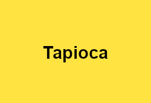
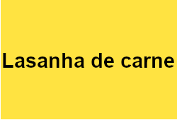

Antes de mais nada, gostaríamos de saber qual é a sua comida favorita! Para isso, clique aqui e responda esta pesquisa.
Clique na imagem para ir para outra página
 Com mais de quatro milhões de inscritos, Tata Pereira é o maior canal de culinária do YouTube Brasil. Tábata produz vídeos de receitas para o YouTube desde 2014, quando começou o canal com nome de Arte Culinária. Além de receitas, Tata também publica vlogs com a família.
O canal Receitas de Pai foi criado em 2016 por Diego Assalve em 2016. O canal conta com a ajuda da família toda, Lorena, esposa de Diego, é responsável pela captação das imagens e os dois filhos do casal também participam de alguns vídeos.
Culinária em Casa é o nome do canal criado em 2014 por Luciana Mirihad. Os vídeos são publicados todos os dias às 7 horas. Além de receitas, ela também produz vídeos com dicas de organização e limpeza da casa.
 Perfil GitHub
Perfil GitHub